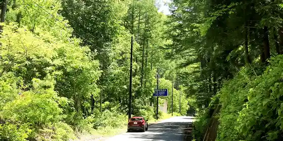
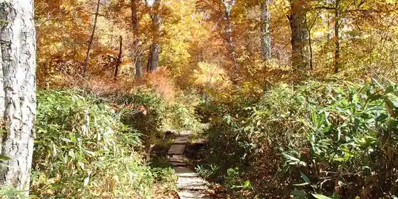
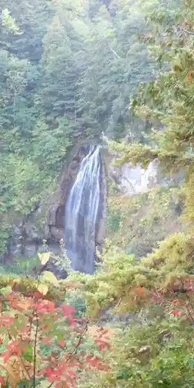
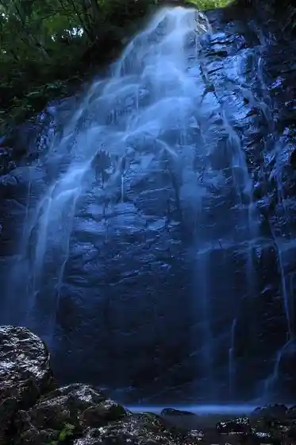

Roadside Station Oze Hinoemata
Hinoemata, Fukushima · 0241-75-2432 · Official / source link
Sho Kei Line
Hinoemata, Fukushima · 0241-75-2432 · Official / source link

Numayama Toge
Hinoemata, Fukushima · 0241-75-2432 · Official / source link

Mokake Falls no Autumn Leaves
Hinoemata, Fukushima · 0241-75-2432 · Official / source link

Numata Kaido
Hinoemata, Fukushima · 0241-75-2432 · Official / source link

Oze Numa
Hinoemata, Fukushima · 0241-75-2432 · Official / source link
Heikatsu no Taki
Hinoemata, Fukushima · 0241-75-2432 · Official / source link
Sanjo Falls
Hinoemata, Fukushima · 0241-75-2432 · Official / source link
Hinoemata Folk History Museum
Hinoemata, Fukushima · 0241-75-2342 · Official / source link
Nakatsuchi Go Park
Hinoemata, Fukushima · 0241-75-2432 · Official / source link
Mini Oze Park
Hinoemata, Fukushima · 0241-75-2065 · Official / source link
Oze National Park
Hinoemata, Fukushima · 0241-75-2432 · Official / source link
Buna Taira no Autumn Leaves
Hinoemata, Fukushima · 0241-75-2432 · Official / source link
Oze Hinoemata Onsen
Hinoemata, Fukushima · 0241-75-2432 · Official / source link
Oze Hinoemata Onsen Ski Area
Hinoemata, Fukushima · 0241-75-2351 · Official / source link
Oze Yonago Taira Campground
Hinoemata, Fukushima · 090-7071-5450 · Official / source link
Mitoshi Ri Oto Campground
Hinoemata, Fukushima · 0241-75-2075 · Official / source link
Bangaro & Kyanpu Karamatsu
Hinoemata, Fukushima · 080-5554-0520 · Official / source link
Suigagaku
Hinoemata, Fukushima · 0241-75-2432 · Official / source link
Ueda Dai
Hinoemata, Fukushima · 0241-75-2432 · Official / source link
Aizu Komagagaku
Hinoemata, Fukushima · 0241-75-2432 · Official / source link
Oze no Sato Koryu Center
Hinoemata, Fukushima · 0241-75-2226 · Official / source link
Hinoemata no Butai
Hinoemata, Fukushima · 0241-75-2432 · Official / source link
Rokujizo
Hinoemata, Fukushima · 0241-75-2432 · Official / source link
Atago Shrine Chinju Shrine
Hinoemata, Fukushima · 0241-75-2432 · Official / source link